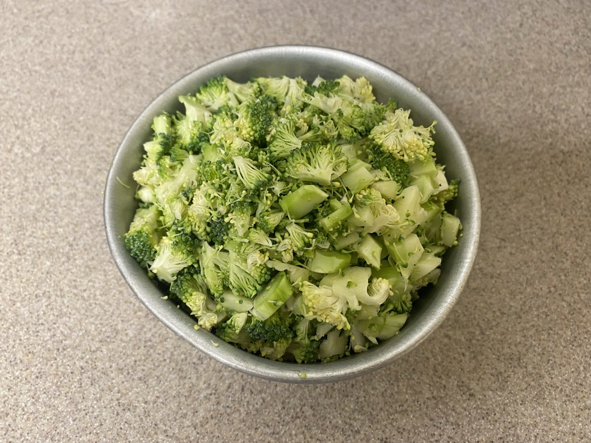

Ingredients:
1 Broccoli
5 Eggs
15 Dumpling Wraps
材料：
1 颗西兰花
5 粒蛋
15 片饺子皮

Step 1
Cut broccoli into small cubes.
西兰花洗净后，切丁。
Step 2
Add a pinch of salt into the eggs, beat and fry them into scrambled eggs.
鸡蛋中加盐，打散，炒成块。
Step 3
Add the broccoli, salt, black pepper and stir for 3 minutes.
将西兰花放进去，加入盐，蔬之鲜翻炒三分钟。
Step 4
Prepare the fillings, wraps and some water.
备好馅儿，饺子皮和一碗水。
Step 5
Wrap the broccoli fillings with the dumpling wraps.
用饺子皮把馅儿包好。